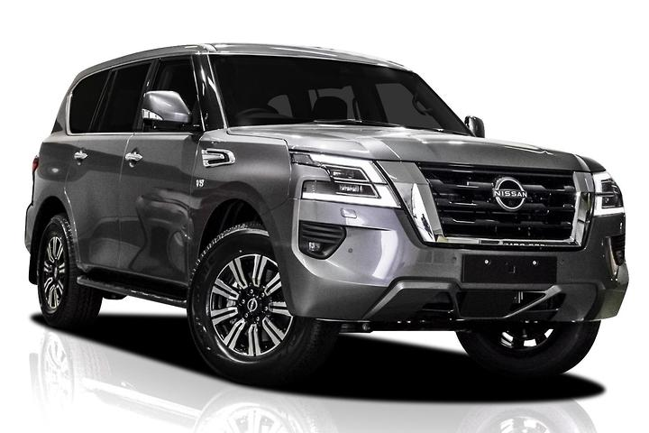

|
The Nissan Patrol is a series of full-size SUVs manufactured by Nissan in Japan and sold throughout the world.
|
 |
With a 5.6-litre V8 petrol engine powering what is to date our biggest SUV, the New Patrol is both willing and able to take you anywhere. No matter if you are cruising the city or turning down the road less travelled, Nissan reliability and raw power lie at the very heart of this Ultra-luxurious SUV. From the moment you engage the push-button engine start, you’ll hear an engine that sounds refined enough for a family SUV, but yet still excels at serious towing and tough off-roading.
This Cayenne S represents a substantial upgrade, with its 4.8-liter V8 good for 400 hp and 369 lb-ft of torque. As with every V8 Cayenne, the eight-speed automatic with auto stop/start is standard. Porsche estimates the S will hit 60 mph in 5.4 seconds. EPA-estimated fuel economy is nearly equal to the V6 at 16/22/18.